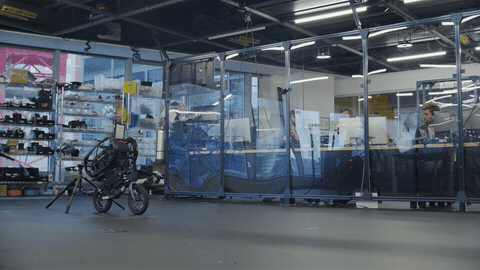
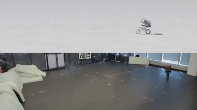
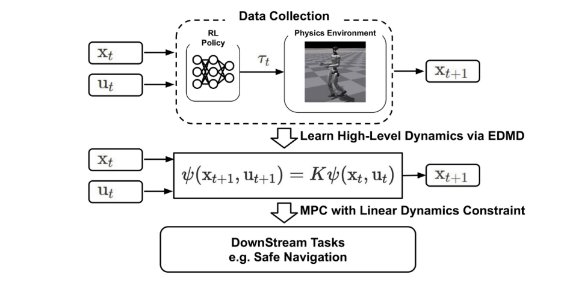
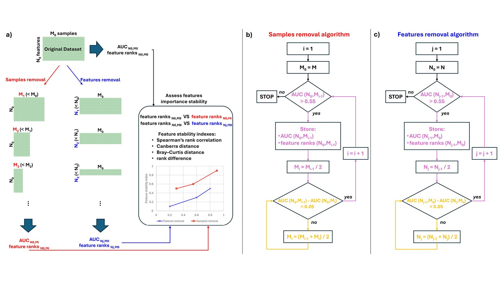
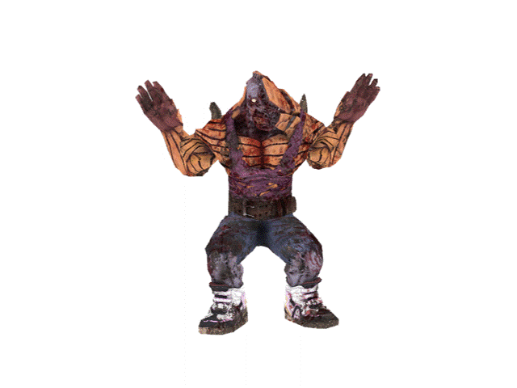

Publications

Flip Stunts on Bicycle Robots using Iterative Motion Imitation
Jeonghwan Kim, Shamel Fahmi, Seungeun Rho, Sehoon Ha, Gabriel Nelson
ICRA 2026
[Project Page] [Arxiv] [Blog]
Work done during internship at the RAI Institute

LineRides: Line-Guided Reinforcement Learning for Bicycle Robot Stunts
Seungeun Rho, Shamel Fahmi, Jeonghwan Kim, Arianna Ilvonen, Sehoon Ha, Gabriel Nelson
IEEE RA-L 2026
Work done during internship at the RAI Institute
Switch-JustDance: Benchmarking Whole-Body Motion Tracking Policies Using a Commercial
Console Game
Jeonghwan Kim*, Wontaek Kim*, Yidan Lu*, Jin Cheng*, Fatemeh Zargarbashi*, Zicheng Zeng*,
Zekun Qi*, Zhiyang Dou, Nitish Sontakke, Donghoon Baek, Sehoon Ha, Tianyu Li
CVPR Findings 2026

Safe Navigation of Bipedal Robots via Koopman Operator-Based Model Predictive Control
Jeonghwan Kim, Yunhai Han, Harish Ravichandar, Sehoon Ha
IROS 2026

Validity of Feature Importance in Low-Performing Machine Learning for Tabular
Biomedical Data
Youngro Lee, Giacomo Baruzzo, Jeonghwan Kim, Jongmo Seo, Barbara Di Camillo
IEEE Access 2025

